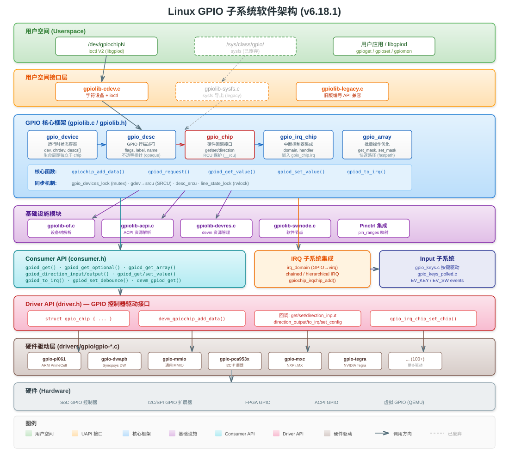
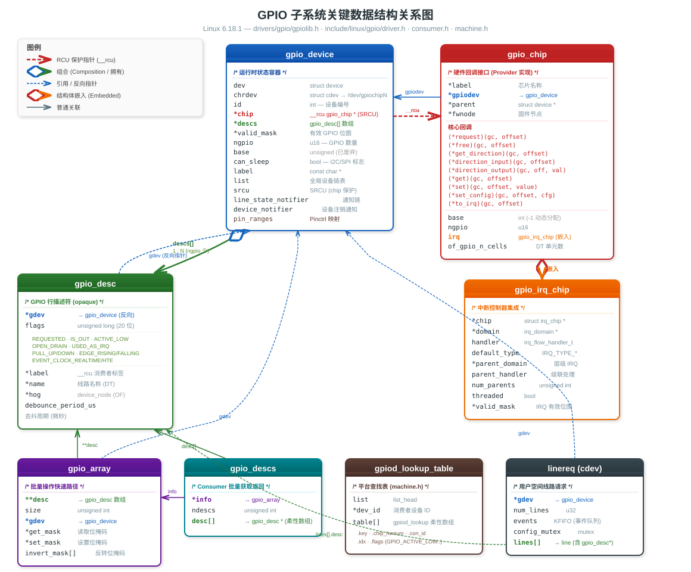

Linux GPIO 子系统采用经典的 分层解耦 设计，将硬件操作、核心框架、内核消费者、用户空间接口清晰分离。

┌─────────────────────────────────────────────────────────────────────┐
│ 用户空间 (Userspace) │
│ ┌─────────────────────┐ ┌──────────────────────────────────┐ │
│ │ /dev/gpiochipN │ │ /sys/class/gpio/ (已废弃) │ │
│ │ (chardev ioctl V2) │ │ (sysfs legacy interface) │ │
│ └─────────┬───────────┘ └──────────────┬───────────────────┘ │
├─────────────┼──────────────────────────────┼───────────────────────┤
│ ┌──────────┴───────────┐ ┌─────────────┴──────────────────┐ │
│ │ gpiolib-cdev.c │ │ gpiolib-sysfs.c │ │
│ │ 字符设备层 │ │ sysfs 接口层 │ │
│ └──────────┬───────────┘ └─────────────┬──────────────────┘ │
│ │ │ │
│ ┌──────────┴──────────────────────────────┴──────────────────┐ │
│ │ gpiolib.c / gpiolib.h │ │
│ │ GPIO 核心框架 (Core Framework) │ │
│ │ ┌──────────┐ ┌──────────┐ ┌──────────┐ ┌───────────┐ │ │
│ │ │gpio_device│ │gpio_desc │ │gpio_chip │ │gpio_array │ │ │
│ │ └──────────┘ └──────────┘ └──────────┘ └───────────┘ │ │
│ └──────────┬──────────────────────────────┬──────────────────┘ │
│ │ │ │
│ ┌──────────┴──────┐ ┌───────────────┐ ┌┴──────────────────┐ │
│ │ gpiolib-of.c │ │gpiolib-acpi.c │ │ gpiolib-devres.c │ │
│ │ 设备树支持 │ │ ACPI 支持 │ │ devm 资源管理 │ │
│ └─────────────────┘ └───────────────┘ └───────────────────┘ │
│ │
│ ┌─────────────────────────────────────────────────────────────┐ │
│ │ Consumer API (include/linux/gpio/consumer.h) │ │
│ │ gpiod_get() / gpiod_set_value() / gpiod_to_irq() │ │
│ └──────────────────────────────┬──────────────────────────────┘ │
│ 内核空间 (Kernel Space) │
├─────────────────────────────────┼──────────────────────────────────┤
│ ┌──────────────────────────────┴──────────────────────────────┐ │
│ │ Driver API (include/linux/gpio/driver.h) │ │
│ │ struct gpio_chip + gpiochip_add_data() 注册接口 │ │
│ └──────────────────────────────┬──────────────────────────────┘ │
│ │ │
│ ┌──────────────────────────────┴──────────────────────────────┐ │
│ │ 硬件驱动层 (Hardware Drivers) │ │
│ │ gpio-pl061.c gpio-dwapb.c gpio-mxc.c gpio-pca953x.c │ │
│ │ gpio-mmio.c gpio-rcar.c gpio-tegra.c ... (100+) │ │
│ └─────────────────────────────────────────────────────────────┘ │
│ 硬件层 (Hardware) │
└────────────────────────────────────────────────────────────────────┘| 设计原则 | 实现方式 |
|---|---|
| 硬件抽象 | gpio_chip 定义统一回调接口，屏蔽底层硬件差异 |
| 描述符化 | 使用 gpio_desc 不透明指针替代全局 GPIO 编号 |
| 生命周期解耦 | gpio_device 可在 gpio_chip 移除后继续存在（支持热插拔） |
| RCU 保护 | gpio_chip 指针受 SRCU 保护，支持安全的并发访问 |
| 多源查找 | 支持 DT → ACPI → 平台查找表 → 行名 的优先级查找链 |
| Pinctrl 整合 | GPIO 与 pin 复用通过 pin_ranges 链表关联 |
每个 GPIO 控制器硬件驱动（如 gpio-pl061.c）需实现 struct gpio_chip 中的回调函数，
然后调用 gpiochip_add_data() / devm_gpiochip_add_data() 注册到核心框架。
gpiolib.c 是整个子系统的核心，负责：
gpio_device 链表gpio_desc 描述符数组gpiod_get_value() 等调用到底层 gpio_chip 回调定义在 include/linux/gpio/consumer.h，提供面向内核驱动的 GPIO 操作接口。
所有操作基于 struct gpio_desc * 描述符，自动处理 active-low、open-drain 等逻辑。
/dev/gpiochipN，使用 ioctl() 进行 GPIO 操作/sys/class/gpio/ 进行简单的 GPIO 控制定义位置：drivers/gpio/gpiolib.h
gpio_device 是 GPIO 控制器在内核中的运行时状态容器，其生命周期独立于底层硬件（gpio_chip）。
即使硬件驱动被移除，只要用户空间还持有 /dev/gpiochipN 的文件描述符，gpio_device 就会继续存在。
struct gpio_device {
struct device dev; /* Linux 设备模型集成 */
struct cdev chrdev; /* 字符设备 /dev/gpiochipN */
int id; /* 设备编号 (gpiochipN 中的 N) */
struct module *owner; /* 所属模块 */
struct gpio_chip __rcu *chip; /* 指向硬件 chip (RCU 保护) */
struct gpio_desc *descs; /* GPIO 描述符数组 (ngpio 个) */
unsigned long *valid_mask; /* 有效 GPIO 位图 */
struct srcu_struct desc_srcu; /* 描述符同步保护 */
unsigned int base; /* 全局 GPIO 编号基址 (已废弃) */
u16 ngpio; /* GPIO 线路数量 */
bool can_sleep; /* 回调是否可能睡眠 (I2C/SPI) */
const char *label; /* 设备标签 */
void *data; /* 驱动私有数据 */
struct list_head list; /* 全局设备链表 */
/* 通知机制 */
struct raw_notifier_head line_state_notifier; /* 线路状态变更通知 */
rwlock_t line_state_lock; /* 通知器保护锁 */
struct workqueue_struct *line_state_wq; /* 异步通知工作队列 */
struct blocking_notifier_head device_notifier; /* 设备注销通知 */
struct srcu_struct srcu; /* chip 指针 SRCU 保护 */
#ifdef CONFIG_PINCTRL
struct list_head pin_ranges; /* pinctrl 映射范围 */
#endif
};关键设计要点：
chip 指针使用 __rcu 标注，通过 SRCU 实现无锁读并发descs 数组在设备注册时一次性分配，大小为 ngpiodevice_notifier 用于通知 cdev 用户设备已移除定义位置：drivers/gpio/gpiolib.h
每条 GPIO 线路对应一个 gpio_desc，是 GPIO 子系统的核心抽象单元。
对消费者来说是不透明的——只能通过 gpiod_* API 操作。
struct gpio_desc {
struct gpio_device *gdev; /* 所属 GPIO 设备 */
unsigned long flags; /* 状态位标志 */
struct gpio_desc_label __rcu *label; /* 消费者标签 (RCU 保护) */
const char *name; /* 线路名称 (来自 DT/ACPI) */
#ifdef CONFIG_OF_DYNAMIC
struct device_node *hog; /* DT hog 节点 */
#endif
#ifdef CONFIG_GPIO_CDEV
unsigned int debounce_period_us; /* 去抖周期 (微秒) */
#endif
};Flag 位定义：
| Flag 位 | 值 | 含义 |
|---|---|---|
GPIOD_FLAG_REQUESTED |
0 | GPIO 已被请求使用 |
GPIOD_FLAG_IS_OUT |
1 | GPIO 配置为输出模式 |
GPIOD_FLAG_EXPORT |
2 | GPIO 已导出到用户空间 |
GPIOD_FLAG_SYSFS |
3 | GPIO 通过 sysfs 导出 |
GPIOD_FLAG_ACTIVE_LOW |
6 | 逻辑电平取反 |
GPIOD_FLAG_OPEN_DRAIN |
7 | 开漏输出模式 |
GPIOD_FLAG_OPEN_SOURCE |
8 | 开源输出模式 |
GPIOD_FLAG_USED_AS_IRQ |
9 | 用作中断源 |
GPIOD_FLAG_IRQ_IS_ENABLED |
10 | 中断已启用 |
GPIOD_FLAG_IS_HOGGED |
11 | 被内核 hog 占用 |
GPIOD_FLAG_TRANSITORY |
12 | 休眠/复位时可能丢失值 |
GPIOD_FLAG_PULL_UP |
13 | 使能上拉电阻 |
GPIOD_FLAG_PULL_DOWN |
14 | 使能下拉电阻 |
GPIOD_FLAG_BIAS_DISABLE |
15 | 禁用偏置 |
GPIOD_FLAG_EDGE_RISING |
16 | 检测上升沿事件 |
GPIOD_FLAG_EDGE_FALLING |
17 | 检测下降沿事件 |
GPIOD_FLAG_EVENT_CLOCK_REALTIME |
18 | 使用实时时钟戳 |
GPIOD_FLAG_EVENT_CLOCK_HTE |
19 | 使用硬件时间戳引擎 |
定义位置：include/linux/gpio/driver.h
这是 GPIO 驱动开发者需要实现的核心结构体，定义了控制器的能力和操作回调。
struct gpio_chip {
/* 标识信息 */
const char *label; /* 芯片标签 */
struct gpio_device *gpiodev; /* 关联的 gpio_device */
struct device *parent; /* 父设备 (platform_device 等) */
struct fwnode_handle *fwnode; /* 固件节点 */
struct module *owner; /* 驱动模块 */
/* ========== 核心操作回调 ========== */
int (*request)(struct gpio_chip *gc, unsigned int offset);
void (*free)(struct gpio_chip *gc, unsigned int offset);
int (*get_direction)(struct gpio_chip *gc, unsigned int offset);
int (*direction_input)(struct gpio_chip *gc, unsigned int offset);
int (*direction_output)(struct gpio_chip *gc, unsigned int offset, int value);
int (*get)(struct gpio_chip *gc, unsigned int offset);
int (*get_multiple)(struct gpio_chip *gc, unsigned long *mask,
unsigned long *bits);
int (*set)(struct gpio_chip *gc, unsigned int offset, int value);
int (*set_multiple)(struct gpio_chip *gc, unsigned long *mask,
unsigned long *bits);
int (*set_config)(struct gpio_chip *gc, unsigned int offset,
unsigned long config);
int (*to_irq)(struct gpio_chip *gc, unsigned int offset);
/* ========== 可选回调 ========== */
void (*dbg_show)(struct seq_file *s, struct gpio_chip *gc);
int (*init_valid_mask)(struct gpio_chip *gc, unsigned long *valid_mask,
unsigned int ngpios);
int (*add_pin_ranges)(struct gpio_chip *gc);
int (*en_hw_timestamp)(struct gpio_chip *gc, u32 offset, unsigned long flags);
int (*dis_hw_timestamp)(struct gpio_chip *gc, u32 offset, unsigned long flags);
/* ========== 配置属性 ========== */
int base; /* GPIO 编号基址 (-1 表示动态分配) */
u16 ngpio; /* 管理的 GPIO 数量 */
u16 offset; /* 多芯片设备中的偏移 */
const char *const *names; /* GPIO 线路别名数组 */
bool can_sleep; /* 回调是否可能睡眠 */
/* ========== IRQ 集成 ========== */
struct gpio_irq_chip irq; /* 中断控制器集成 */
/* ========== Device Tree 支持 ========== */
unsigned int of_gpio_n_cells; /* GPIO 描述符单元数 (通常为 2) */
int (*of_xlate)(struct gpio_chip *gc,
const struct of_phandle_args *gpiospec, u32 *flags);
};核心回调说明：
| 回调函数 | 必需性 | 说明 |
|---|---|---|
request |
可选 | GPIO 被请求时调用，用于引脚复用等 |
free |
可选 | GPIO 被释放时调用 |
get_direction |
推荐 | 返回方向：0=输出，1=输入 |
direction_input |
条件必须 | 配置为输入（非纯输出芯片必须实现） |
direction_output |
条件必须 | 配置为输出并设置值 |
get |
必须 | 读取 GPIO 电平值 |
set |
必须 | 设置 GPIO 输出电平 |
get_multiple |
可选 | 批量读取，性能优化 |
set_multiple |
可选 | 批量设置，性能优化 |
set_config |
可选 | 通用配置（去抖、偏置等） |
to_irq |
可选 | GPIO 偏移转中断号 |
定义位置：include/linux/gpio/driver.h
嵌入在 gpio_chip.irq 中，将 GPIO 控制器与 Linux 中断子系统集成。
struct gpio_irq_chip {
struct irq_chip *chip; /* IRQ 芯片实现 */
struct irq_domain *domain; /* 中断翻译域 */
irq_flow_handler_t handler; /* IRQ 流处理函数 */
unsigned int default_type; /* 默认触发类型 */
/* 层级中断支持 */
struct irq_domain *parent_domain; /* 父中断域 */
int (*child_to_parent_hwirq)(...); /* 子→父 IRQ 映射 */
/* 级联中断支持 */
irq_flow_handler_t parent_handler; /* 父中断处理函数 */
unsigned int num_parents; /* 父中断数量 */
unsigned int *parents; /* 父中断号数组 */
unsigned int *map; /* 每线路父中断映射 */
/* 控制标志 */
bool threaded; /* 使用线程化中断处理 */
bool per_parent_data; /* 每父中断独立数据 */
bool initialized; /* 初始化完成标志 */
/* 有效性掩码 */
unsigned long *valid_mask; /* 可用于中断的 GPIO 位图 */
void (*init_valid_mask)(...); /* 初始化有效掩码回调 */
int (*init_hw)(struct gpio_chip *gc); /* 硬件初始化回调 */
};定义位置：drivers/gpio/gpiolib.h
通过 gpiod_get_array() 获取，用于批量 GPIO 操作的快速路径优化。
struct gpio_array {
struct gpio_desc **desc; /* GPIO 描述符指针数组 */
unsigned int size; /* 描述符数量 */
struct gpio_device *gdev; /* 父 GPIO 设备 */
unsigned long *get_mask; /* 读取掩码 (快速路径) */
unsigned long *set_mask; /* 设置掩码 (快速路径) */
unsigned long invert_mask[]; /* 逻辑反转掩码 */
};定义位置：include/linux/gpio/consumer.h
消费者通过 gpiod_get_array() 获得的返回值。
struct gpio_descs {
struct gpio_array *info; /* 批量操作优化信息 */
unsigned int ndescs; /* 描述符数量 */
struct gpio_desc *desc[]; /* 柔性数组：描述符指针 */
};定义位置：include/linux/gpio/machine.h
用于无设备树的平台（如 x86 板级支持包），通过代码静态注册 GPIO 映射。
/* GPIO 查找条目 */
struct gpiod_lookup {
const char *key; /* chip 标签或 GPIO 行名 */
u16 chip_hwnum; /* 相对于 chip 的硬件编号 */
const char *con_id; /* 连接标识符 */
unsigned int idx; /* 同名 GPIO 的索引 */
unsigned long flags; /* GPIO_ACTIVE_LOW 等标志 */
};
/* GPIO 查找表 */
struct gpiod_lookup_table {
struct list_head list; /* 链表节点 */
const char *dev_id; /* 消费者设备 ID */
struct gpiod_lookup table[]; /* 柔性数组：查找条目 */
};
/* GPIO hog 条目 */
struct gpiod_hog {
struct list_head list;
const char *chip_label; /* 芯片标签 */
u16 chip_hwnum; /* 硬件编号 */
const char *line_name; /* 线路名称 */
unsigned long lflags; /* 查找标志 */
int dflags; /* 方向标志 */
};查找标志 (enum gpio_lookup_flags)：
enum gpio_lookup_flags {
GPIO_ACTIVE_HIGH = (0 << 0), /* 高电平有效（默认） */
GPIO_ACTIVE_LOW = (1 << 0), /* 低电平有效 */
GPIO_OPEN_DRAIN = (1 << 1), /* 开漏输出 */
GPIO_OPEN_SOURCE = (1 << 2), /* 开源输出 */
GPIO_PERSISTENT = (0 << 3), /* 持久值（默认） */
GPIO_TRANSITORY = (1 << 3), /* 瞬态值 */
GPIO_PULL_UP = (1 << 4), /* 上拉 */
GPIO_PULL_DOWN = (1 << 5), /* 下拉 */
GPIO_PULL_DISABLE = (1 << 6), /* 禁用偏置 */
};
以下为文本版关系示意：
gpiod_lookup_table gpio_device
┌──────────────┐ ┌─────────────────────┐
│ dev_id │ │ dev (struct device) │
│ table[] │ │ chrdev (struct cdev) │ ──> /dev/gpiochipN
└──────────────┘ │ id │
│ chip ──────────────────┐ (RCU)
gpio_descs (Consumer) │ descs[] ──────┐ │
┌──────────────┐ │ ngpio │ │
│ info ─────────┼─> gpio_array │ valid_mask │ │
│ ndescs │ │ srcu │ │
│ desc[] ───────┼─┐ │ pin_ranges │ │
└──────────────┘ │ └────────────────┘ │
│ │ │
▼ ▼ ▼
gpio_desc[0] gpio_desc[N] gpio_chip
┌───────────┐ ┌───────────┐ ┌──────────────┐
│ gdev ────┼──┐ │ gdev │ │ label │
│ flags │ │ │ flags │ │ ngpio │
│ label │ │ │ label │ │ base │
│ name │ │ │ name │ │ get() │
│ debounce │ │ │ debounce │ │ set() │
└───────────┘ │ └───────────┘ │ direction_*()│
│ │ irq (gpio_irq_chip)
└──────────────────────│ of_xlate() │
(gdev 反向指向) └──────────────┘头文件：include/linux/gpio/consumer.h
/* ===== 单个 GPIO 获取 ===== */
struct gpio_desc *gpiod_get(struct device *dev, const char *con_id,
enum gpiod_flags flags);
struct gpio_desc *gpiod_get_optional(struct device *dev, const char *con_id,
enum gpiod_flags flags);
struct gpio_desc *gpiod_get_index(struct device *dev, const char *con_id,
unsigned int idx, enum gpiod_flags flags);
/* ===== 批量 GPIO 获取 ===== */
struct gpio_descs *gpiod_get_array(struct device *dev, const char *con_id,
enum gpiod_flags flags);
struct gpio_descs *gpiod_get_array_optional(struct device *dev,
const char *con_id,
enum gpiod_flags flags);
/* ===== 释放 ===== */
void gpiod_put(struct gpio_desc *desc);
void gpiod_put_array(struct gpio_descs *descs);获取标志 (enum gpiod_flags)：
| 标志 | 说明 |
|---|---|
GPIOD_ASIS |
保持当前状态不变 |
GPIOD_IN |
设为输入模式 |
GPIOD_OUT_LOW |
设为输出，驱动低 |
GPIOD_OUT_HIGH |
设为输出，驱动高 |
GPIOD_OUT_LOW_OPEN_DRAIN |
开漏输出，驱动低 |
GPIOD_OUT_HIGH_OPEN_DRAIN |
开漏输出，驱动高 |
int gpiod_direction_input(struct gpio_desc *desc);
int gpiod_direction_output(struct gpio_desc *desc, int value);
int gpiod_direction_output_raw(struct gpio_desc *desc, int value);
int gpiod_get_direction(struct gpio_desc *desc);适用于 MMIO 类 GPIO 控制器（can_sleep == false）。
什么是 MMIO 类 GPIO 控制器？
MMIO（Memory-Mapped I/O）类 GPIO 控制器指通过内存映射寄存器控制 GPIO 引脚的硬件模块。CPU 能像访问普通内存一样，用readl()/writel()直接读写固定地址的寄存器，延迟极低（纳秒级），操作不会睡眠。典型代表：PL061、MPC8XXX 以及内核通用gpio-mmio.c（bgpio）驱动覆盖的所有 SoC 片上 GPIO。
与之对立的是 I2C/SPI 总线扩展 GPIO（如 PCF8574、MCP23017），它们需要总线事务，操作可能睡眠，因此can_sleep = true。
gpio_chip.can_sleep字段即为区分点：
-false（MMIO 类）— 回调可在中断上下文 / 持自旋锁时安全调用，使用本节的非睡眠 API
-true（总线类）— 只能在进程上下文调用，需使用 4.4 节的_cansleep后缀 API
/* 逻辑值（考虑 active-low） */
int gpiod_get_value(const struct gpio_desc *desc);
void gpiod_set_value(struct gpio_desc *desc, int value);
/* 原始物理值 */
int gpiod_get_raw_value(const struct gpio_desc *desc);
void gpiod_set_raw_value(struct gpio_desc *desc, int value);
/* 批量操作 */
int gpiod_get_array_value(unsigned int array_size,
struct gpio_desc **desc_array,
struct gpio_array *array_info,
unsigned long *value_bitmap);
int gpiod_set_array_value(unsigned int array_size,
struct gpio_desc **desc_array,
struct gpio_array *array_info,
unsigned long *value_bitmap);适用于 I2C/SPI 总线扩展的 GPIO（can_sleep == true）。
int gpiod_get_value_cansleep(const struct gpio_desc *desc);
void gpiod_set_value_cansleep(struct gpio_desc *desc, int value);
int gpiod_get_raw_value_cansleep(const struct gpio_desc *desc);
void gpiod_set_raw_value_cansleep(struct gpio_desc *desc, int value);
/* 批量操作 (可睡眠) */
int gpiod_get_array_value_cansleep(...);
int gpiod_set_array_value_cansleep(...);int gpiod_set_config(struct gpio_desc *desc, unsigned long config);
int gpiod_set_debounce(struct gpio_desc *desc, unsigned int debounce);
void gpiod_toggle_active_low(struct gpio_desc *desc);
int gpiod_is_active_low(const struct gpio_desc *desc);
int gpiod_cansleep(const struct gpio_desc *desc);
int gpiod_to_irq(const struct gpio_desc *desc); /* 获取 IRQ 编号 */
int gpiod_count(struct device *dev, const char *con_id); 物理电平 Active-Low 标志 逻辑值
gpiod_set_value(desc, 1):
active-high: HIGH → 无反转 → 1 (active)
active-low: LOW → 反转 → 1 (active)
gpiod_set_raw_value(desc, 1):
active-high: HIGH → 不处理 → 1
active-low: HIGH → 不处理 → 1头文件：include/linux/gpio/driver.h
/* 注册 GPIO 芯片 (带私有数据) */
int gpiochip_add_data(struct gpio_chip *gc, void *data);
/* 设备资源管理版本 (推荐) */
int devm_gpiochip_add_data(struct device *dev, struct gpio_chip *gc, void *data);
/* 注销 */
void gpiochip_remove(struct gpio_chip *gc);
/* 获取/设置驱动私有数据 */
void *gpiochip_get_data(struct gpio_chip *gc);gpiochip_add_data_with_key)gpiochip_add_data()
│
├── 1. 分配 gpio_device (kzalloc)
├── 2. 设置 device 类型和总线
├── 3. RCU 赋值 gdev->chip = gc
├── 4. 分配 IDA 获取设备 ID
├── 5. 获取 ngpio 数量
├── 6. 分配 gpio_desc 描述符数组
├── 7. 分配全局 GPIO base (动态)
│
├── 8. 加入全局 gpio_devices 链表
├── 9. 初始化描述符 (gdev 反向指针, 名称)
│
├── 10. of_gpiochip_add() — 注册 DT 支持
├── 11. gpiochip_add_pin_ranges() — Pinctrl 集成
├── 12. gpiochip_add_irqchip() — IRQ 域集成
│
├── 13. device_add() — 注册到设备模型
├── 14. gpiolib_cdev_register() — 创建字符设备
│
└── 15. gpiochip_setup_devs() — 设置 debugfs框架预定义了一些常用的 request/free 回调，用于 Pinctrl 集成：
int gpiochip_generic_request(struct gpio_chip *gc, unsigned int offset);
void gpiochip_generic_free(struct gpio_chip *gc, unsigned int offset);
int gpiochip_generic_config(struct gpio_chip *gc, unsigned int offset,
unsigned long config);void gpio_irq_chip_set_chip(struct gpio_irq_chip *girq,
const struct irq_chip *chip);
void gpiochip_enable_irq(struct gpio_chip *gc, unsigned int offset);
void gpiochip_disable_irq(struct gpio_chip *gc, unsigned int offset);实现位置：drivers/gpio/gpiolib-cdev.c
每个注册的 GPIO 控制器创建 /dev/gpiochipN 字符设备。
| ioctl 命令 | 说明 |
|---|---|
GPIO_GET_CHIPINFO_IOCTL |
获取芯片信息（名称、标签、线路数） |
GPIO_V2_GET_LINEINFO_IOCTL |
获取线路信息 |
GPIO_V2_GET_LINEINFO_WATCH_IOCTL |
监听线路信息变化 |
GPIO_V2_GET_LINEINFO_UNWATCH_IOCTL |
停止监听 |
GPIO_V2_LINE_REQUEST_IOCTL |
请求 GPIO 线路（返回新 fd） |
| ioctl 命令 | 说明 |
|---|---|
GPIO_V2_LINE_GET_VALUES_IOCTL |
读取线路值 |
GPIO_V2_LINE_SET_VALUES_IOCTL |
设置线路值 |
GPIO_V2_LINE_SET_CONFIG_IOCTL |
重新配置线路 |
GPIO_V2_LINE_FLAG_INPUT /* 输入模式 */
GPIO_V2_LINE_FLAG_OUTPUT /* 输出模式 */
GPIO_V2_LINE_FLAG_ACTIVE_LOW /* 逻辑反转 */
GPIO_V2_LINE_FLAG_OPEN_DRAIN /* 开漏输出 */
GPIO_V2_LINE_FLAG_OPEN_SOURCE /* 开源输出 */
GPIO_V2_LINE_FLAG_BIAS_PULL_UP /* 使能上拉 */
GPIO_V2_LINE_FLAG_BIAS_PULL_DOWN /* 使能下拉 */
GPIO_V2_LINE_FLAG_BIAS_DISABLED /* 禁用偏置 */
GPIO_V2_LINE_FLAG_EDGE_RISING /* 上升沿事件 */
GPIO_V2_LINE_FLAG_EDGE_FALLING /* 下降沿事件 */
GPIO_V2_LINE_FLAG_EVENT_CLOCK_REALTIME /* 实时时钟戳 */
GPIO_V2_LINE_FLAG_EVENT_CLOCK_HTE /* 硬件时间戳 */struct gpio_v2_line_event {
__u64 timestamp_ns; /* 事件时间戳 (纳秒) */
__u32 id; /* 事件类型: RISING_EDGE / FALLING_EDGE */
__u32 offset; /* 线路在芯片中的偏移 */
__u32 seqno; /* 全局序列号 */
__u32 line_seqno; /* 单线路序列号 */
__u32 padding[6];
};/* 线路请求 */
struct linereq {
struct gpio_device *gdev;
const char *label;
u32 num_lines;
wait_queue_head_t wait;
u32 event_buffer_size;
DECLARE_KFIFO_PTR(events, struct gpio_v2_line_event);
atomic_t seqno; /* 事件序列号 */
struct mutex config_mutex; /* 配置互斥锁 */
struct line lines[]; /* 线路数组 */
};
/* 单条线路 */
struct line {
struct gpio_desc *desc;
struct linereq *req;
unsigned int irq; /* 中断号 */
u64 edflags; /* 边沿检测标志 */
u64 timestamp_ns; /* 缓存时间戳 */
u32 req_seqno; /* 请求级序列号 */
u32 line_seqno; /* 线路级序列号 */
struct delayed_work work; /* 去抖延迟工作 */
unsigned int sw_debounced; /* 软件去抖活跃标志 */
unsigned int level; /* 去抖后稳定电平 */
};1. open("/dev/gpiochip0") ──────────────────> 获取 chip_fd
2. ioctl(chip_fd, GPIO_GET_CHIPINFO_IOCTL) ──> 获取芯片信息
3. ioctl(chip_fd, GPIO_V2_LINE_REQUEST_IOCTL) ─> 获取 line_fd
(指定 offset、方向、标志)
4. ioctl(line_fd, GPIO_V2_LINE_GET_VALUES_IOCTL) ──> 读值
ioctl(line_fd, GPIO_V2_LINE_SET_VALUES_IOCTL) ──> 写值
5. (边沿检测) poll(line_fd) + read(line_fd) ────> 获取事件
6. close(line_fd)
7. close(chip_fd)实现位置：drivers/gpio/gpiolib-sysfs.c
| 路径 | 操作 | 说明 |
|---|---|---|
/sys/class/gpio/export |
写入 GPIO 编号 | 导出 GPIO |
/sys/class/gpio/unexport |
写入 GPIO 编号 | 取消导出 |
/sys/class/gpio/gpioN/direction |
读写 "in"/"out" | 方向控制 |
/sys/class/gpio/gpioN/value |
读写 0/1 | 值控制 |
/sys/class/gpio/gpioN/edge |
读写 "none"/"rising"/"falling"/"both" | 中断边沿 |
/sys/class/gpio/gpioN/active_low |
读写 0/1 | 反转逻辑 |
注意： sysfs 接口在新的内核开发中不应使用，请使用 /dev/gpiochipN 字符设备接口。
硬件中断触发
│
▼
┌──────────────────┐
│ GIC / 父中断控制器│
└────────┬─────────┘
│
▼
┌──────────────────┐ ┌─────────────────────┐
│ parent_handler │────>│ chained_irq_enter() │
│ (级联处理) │ │ 读取 GPIO 挂起状态 │
└────────┬─────────┘ │ chained_irq_exit() │
│ └─────────────────────┘
▼
┌──────────────────┐
│ irq_domain │ GPIO 偏移 → Linux virq 映射
│ (中断翻译域) │
└────────┬─────────┘
│
┌───────┼────────┐
▼ ▼ ▼
消费者 消费者 CDEV 用户
IRQ处理 IRQ处理 (KFIFO事件)/* 1. 定义 irq_chip (必须标记为 IMMUTABLE) */
static const struct irq_chip my_irq_chip = {
.irq_ack = my_irq_ack,
.irq_mask = my_irq_mask,
.irq_unmask = my_irq_unmask,
.irq_set_type = my_irq_set_type,
.flags = IRQCHIP_IMMUTABLE,
GPIOCHIP_IRQ_RESOURCE_HELPERS,
};
/* 2. 在 probe 中配置 */
struct gpio_irq_chip *girq = &gc->irq;
gpio_irq_chip_set_chip(girq, &my_irq_chip);
girq->parent_handler = my_irq_handler;
girq->num_parents = 1;
girq->parents = devm_kcalloc(dev, 1, sizeof(*girq->parents), GFP_KERNEL);
girq->parents[0] = parent_irq;
girq->default_type = IRQ_TYPE_NONE;
girq->handler = handle_bad_irq;
/* 3. 注册时自动设置 IRQ 域 */
devm_gpiochip_add_data(dev, gc, data);1. 硬件边沿 → IRQ 触发
2. debounce_irq_handler() → 调度 delayed_work
3. 延迟 debounce_period_us 后执行 debounce_work_func()
4. 读取稳定电平，与上次比较
5. 电平变化 → 生成 gpio_v2_line_event
6. 入队到 KFIFO → 唤醒 poll() 等待者实现位置：drivers/gpio/gpiolib-of.c
/* GPIO 控制器节点 */
gpio0: gpio@e8a0b000 {
compatible = "arm,pl061", "arm,primecell";
reg = <0xe8a0b000 0x1000>;
interrupts = <GIC_SPI 84 IRQ_TYPE_LEVEL_HIGH>;
gpio-controller; /* 标记为 GPIO 控制器 */
#gpio-cells = <2>; /* 每个 GPIO 说明符占 2 个单元 */
interrupt-controller; /* 也是中断控制器 */
#interrupt-cells = <2>;
};
/* 消费者节点 */
leds {
compatible = "gpio-leds";
led0 {
gpios = <&gpio0 3 GPIO_ACTIVE_LOW>; /* gpio0, offset=3, active-low */
label = "heartbeat";
};
};
/* GPIO hog (内核启动时自动配置) */
gpio1: gpio@e8a0c000 {
line_b {
gpio-hog;
gpios = <6 0>;
output-high;
line-name = "foo-bar-gpio";
};
};| 位 | 含义 |
|---|---|
| Bit 0 | Active-low |
| Bit 1 | 单端模式（single-ended） |
| Bit 2 | 开漏模式 |
| Bit 3 | 瞬态（transitory） |
| Bit 4-5 | 上拉/下拉 |
/* 计算 DT 属性中的 GPIO 数量 */
int of_gpio_named_count(const struct device_node *np, const char *propname);
/* GPIO 说明符翻译为描述符 */
struct gpio_desc *of_xlate_and_get_gpiod_flags(struct gpio_chip *gc,
const struct of_phandle_args *gpiospec, enum of_gpio_flags *flags);
/* 注册 GPIO 芯片的 DT 支持 */
int of_gpiochip_add(struct gpio_chip *gc);
/* GPIO 属性名后缀搜索 (gpios, gpio) */
for_each_gpio_property_name(propname, con_id) { ... }GPIO 子系统与 Pinctrl 子系统通过 pin ranges 实现关联：
/* 添加引脚范围映射 */
int gpiochip_add_pin_range(struct gpio_chip *gc, const char *pinctl_name,
unsigned int gpio_offset, unsigned int pin_offset,
unsigned int npins);
/* 移除引脚范围 */
void gpiochip_remove_pin_ranges(struct gpio_chip *gc);
/* 通用 request/free 回调 (自动处理 pinctrl) */
int gpiochip_generic_request(struct gpio_chip *gc, unsigned int offset);
void gpiochip_generic_free(struct gpio_chip *gc, unsigned int offset);工作流程：
消费者调用 gpiod_get()
→ gpiod_request()
→ gc->request() [= gpiochip_generic_request]
→ pinctrl_gpio_request()
→ 配置引脚为 GPIO 功能（而非 SPI/I2C/UART 等）实现位置：drivers/gpio/gpiolib-devres.c
提供自动资源释放的 GPIO 接口，驱动 remove() 时自动清理。
/* ===== 获取 GPIO (自动释放) ===== */
struct gpio_desc *devm_gpiod_get(struct device *dev, const char *con_id,
enum gpiod_flags flags);
struct gpio_desc *devm_gpiod_get_optional(struct device *dev,
const char *con_id,
enum gpiod_flags flags);
struct gpio_desc *devm_gpiod_get_index(struct device *dev,
const char *con_id,
unsigned int idx,
enum gpiod_flags flags);
struct gpio_descs *devm_gpiod_get_array(struct device *dev,
const char *con_id,
enum gpiod_flags flags);
/* ===== 通过 fwnode 获取 ===== */
struct gpio_desc *devm_fwnode_gpiod_get_index(struct device *dev,
struct fwnode_handle *fwnode, const char *con_id,
int index, enum gpiod_flags flags, const char *label);
/* ===== 手动释放 / 解除关联 ===== */
void devm_gpiod_put(struct device *dev, struct gpio_desc *desc);
void devm_gpiod_unhinge(struct device *dev, struct gpio_desc *desc);
/* ===== 注册 GPIO 芯片 (自动注销) ===== */
int devm_gpiochip_add_data(struct device *dev, struct gpio_chip *gc, void *data);| 锁 | 类型 | 保护对象 |
|---|---|---|
gpio_devices_lock |
mutex | 全局 gpio_device 链表 (写入) |
gpio_devices_srcu |
SRCU | 全局设备链表 (读取遍历) |
| 锁 | 类型 | 保护对象 |
|---|---|---|
gdev->srcu |
SRCU | gpio_chip 指针 (热插拔安全) |
gdev->desc_srcu |
SRCU | 描述符状态一致性 |
gdev->line_state_lock |
rwlock | 线路状态通知链 |
| 锁 | 类型 | 保护对象 |
|---|---|---|
linereq->config_mutex |
mutex | 线路配置 ioctl 串行化 |
/* 安全访问 gpio_chip 的作用域守护 */
CLASS(gpio_chip_guard, guard)(desc);
if (!guard.gc)
return -ENODEV; /* 芯片已移除 */
/* 在此安全使用 guard.gc */
guard.gc->get(guard.gc, gpio_chip_hwgpio(desc));
/* 退出作用域自动释放 SRCU 读锁 */源码位置：drivers/gpio/gpio-pl061.c
ARM PrimeCell PL061 是一个典型的 SoC GPIO 控制器，支持 8 个 GPIO，同时集成中断功能。
struct pl061 {
raw_spinlock_t lock; /* 寄存器访问保护 */
void __iomem *base; /* MMIO 基地址 */
struct gpio_chip gc; /* 嵌入 gpio_chip */
int parent_irq; /* 父中断号 */
#ifdef CONFIG_PM
struct pl061_context_save_regs csave_regs; /* PM 上下文保存 */
#endif
};static int pl061_probe(struct amba_device *adev, const struct amba_id *id)
{
struct pl061 *pl061;
struct gpio_irq_chip *girq;
/* 1. 分配驱动私有结构 */
pl061 = devm_kzalloc(dev, sizeof(*pl061), GFP_KERNEL);
/* 2. 映射 MMIO 寄存器 */
pl061->base = devm_ioremap_resource(dev, &adev->res);
/* 3. 配置 gpio_chip 回调 */
pl061->gc.request = gpiochip_generic_request;
pl061->gc.free = gpiochip_generic_free;
pl061->gc.base = -1; /* 动态分配 */
pl061->gc.get_direction = pl061_get_direction;
pl061->gc.direction_input = pl061_direction_input;
pl061->gc.direction_output = pl061_direction_output;
pl061->gc.get = pl061_get_value;
pl061->gc.set = pl061_set_value;
pl061->gc.ngpio = PL061_GPIO_NR; /* 8 */
pl061->gc.label = dev_name(dev);
pl061->gc.parent = dev;
/* 4. 配置 IRQ 芯片 */
girq = &pl061->gc.irq;
gpio_irq_chip_set_chip(girq, &pl061_irq_chip);
girq->parent_handler = pl061_irq_handler;
girq->num_parents = 1;
girq->parents[0] = irq;
girq->default_type = IRQ_TYPE_NONE;
girq->handler = handle_bad_irq;
/* 5. 一键注册 (GPIO + IRQ + cdev) */
ret = devm_gpiochip_add_data(dev, &pl061->gc, pl061);
return ret;
}/* 级联中断处理 */
static void pl061_irq_handler(struct irq_desc *desc)
{
struct gpio_chip *gc = irq_desc_get_handler_data(desc);
struct pl061 *pl061 = gpiochip_get_data(gc);
struct irq_chip *irqchip = irq_desc_get_chip(desc);
chained_irq_enter(irqchip, desc); /* 通知父 IRQ 控制器 */
pending = readb(pl061->base + GPIOMIS); /* 读取中断状态 */
for_each_set_bit(offset, &pending, PL061_GPIO_NR)
generic_handle_domain_irq(gc->irq.domain, offset); /* 分发到子 IRQ */
chained_irq_exit(irqchip, desc);
}gpiod_get(dev, "reset", GPIOD_OUT_LOW)
│
├── 1. 设备树查找 (of_find_gpio)
│ 查找 "reset-gpios" 或 "reset-gpio" 属性
│
├── 2. ACPI 查找 (acpi_find_gpio)
│ 查找 ACPI GPIO 资源
│
├── 3. 软件节点查找 (swnode_find_gpio)
│ 查找 swnode 属性
│
└── 4. 平台查找表 (gpiod_find_lookup_table)
匹配 dev_id + con_idgpiod_get(dev, con_id, flags)
│
├── gpiod_find_and_request()
│ ├── 按优先级查找 GPIO 描述符
│ ├── gpiod_request() — 标记为已使用
│ │ ├── 检查 GPIOD_FLAG_REQUESTED
│ │ ├── 调用 gc->request() (如 pinctrl_gpio_request)
│ │ └── 设置 label, 发送 LINE_CHANGED_REQUESTED 通知
│ └── gpiod_configure_flags() — 应用方向和电平配置
│ ├── 设置 active-low / open-drain / bias 标志
│ ├── gpiod_direction_input() 或 gpiod_direction_output()
│ └── 通知线路状态变更
│
└── 返回 struct gpio_desc *| 文件路径 | 说明 |
|---|---|
include/linux/gpio/consumer.h |
消费者 API（gpiod_get、gpiod_set_value 等） |
include/linux/gpio/driver.h |
驱动 API（gpio_chip 结构体、注册接口） |
include/linux/gpio/machine.h |
平台查找表（gpiod_lookup、GPIO_LOOKUP 宏） |
include/linux/gpio/property.h |
软件节点 GPIO 属性 |
include/linux/gpio/regmap.h |
regmap 基础 GPIO 支持 |
include/linux/gpio.h |
旧版兼容头文件（不建议使用） |
| 文件路径 | 说明 |
|---|---|
drivers/gpio/gpiolib.c |
核心框架：注册、请求、值操作、IRQ 集成 |
drivers/gpio/gpiolib.h |
内部头文件：gpio_device、gpio_desc 定义 |
drivers/gpio/gpiolib-cdev.c |
字符设备接口：ioctl 处理、事件分发 |
drivers/gpio/gpiolib-of.c |
设备树支持：DT GPIO 说明符解析 |
drivers/gpio/gpiolib-acpi-core.c |
ACPI 支持 |
drivers/gpio/gpiolib-sysfs.c |
sysfs 接口（已废弃） |
drivers/gpio/gpiolib-devres.c |
devm 资源管理封装 |
drivers/gpio/gpiolib-legacy.c |
旧版 API 兼容层 |
drivers/gpio/gpiolib-swnode.c |
软件节点支持 |
drivers/gpio/gpio-mmio.c |
通用 MMIO GPIO 辅助 |
drivers/gpio/gpio-regmap.c |
regmap GPIO 辅助 |
| 驱动文件 | 芯片类型 |
|---|---|
gpio-pl061.c |
ARM PrimeCell PL061 |
gpio-dwapb.c |
Synopsys DesignWare APB |
gpio-mxc.c |
NXP i.MX GPIO |
gpio-tegra.c |
NVIDIA Tegra |
gpio-rcar.c |
Renesas R-Car |
gpio-pca953x.c |
NXP PCA953x I2C 扩展 |
gpio-pcf857x.c |
NXP PCF857x I2C 扩展 |
gpio-mmio.c |
通用内存映射 GPIO |
| ... | 更多 100+ 硬件驱动 |
| 模式 | 应用 |
|---|---|
| Strategy 模式 | gpio_chip 回调函数表，不同硬件提供不同实现 |
| Descriptor 模式 | gpio_desc 作为不透明句柄，隐藏内部实现细节 |
| Observer 模式 | line_state_notifier 和 device_notifier 通知链 |
| Facade 模式 | gpiod_* API 统一封装，屏蔽底层复杂性 |
| Bridge 模式 | gpio_device 桥接用户空间接口与硬件 gpio_chip |
| RAII 模式 | devm_* 接口，资源生命周期与设备绑定 |
| 使用场景 | 推荐 API | 头文件 |
|---|---|---|
| 内核驱动获取/操作 GPIO | gpiod_get() + gpiod_set_value() |
consumer.h |
| 内核驱动（需自动释放） | devm_gpiod_get() |
consumer.h |
| GPIO 控制器驱动开发 | gpio_chip + devm_gpiochip_add_data() |
driver.h |
| 无 DT 的平台 GPIO 映射 | gpiod_lookup_table + gpiod_add_lookup_table() |
machine.h |
| 用户空间 GPIO 控制 | /dev/gpiochipN + ioctl V2 API |
|
gpio_request() + gpio_get_value() |
gpio.h |
/* ========== 消费者 (Consumer) ========== */
gpiod_get(dev, con_id, flags) // 获取 GPIO
gpiod_get_optional(dev, con_id, flags) // 获取 GPIO (可选，不存在返回 NULL)
gpiod_put(desc) // 释放 GPIO
gpiod_direction_input(desc) // 设为输入
gpiod_direction_output(desc, value) // 设为输出
gpiod_get_value(desc) // 读逻辑值
gpiod_set_value(desc, value) // 写逻辑值
gpiod_get_value_cansleep(desc) // 读值 (可睡眠)
gpiod_set_value_cansleep(desc, value) // 写值 (可睡眠)
gpiod_to_irq(desc) // 获取中断号
gpiod_set_debounce(desc, usec) // 设置去抖
/* ========== 驱动 (Provider) ========== */
gpiochip_add_data(gc, data) // 注册 GPIO 芯片
devm_gpiochip_add_data(dev, gc, data) // 注册 (自动注销)
gpiochip_remove(gc) // 注销 GPIO 芯片
gpiochip_get_data(gc) // 获取私有数据
gpio_irq_chip_set_chip(girq, chip) // 设置 IRQ 芯片
gpiochip_enable_irq(gc, offset) // 启用 GPIO IRQ
gpiochip_disable_irq(gc, offset) // 禁用 GPIO IRQ
/* ========== devm 封装 ========== */
devm_gpiod_get(dev, con_id, flags) // 获取 (自动释放)
devm_gpiod_get_optional(...) // 获取可选 (自动释放)
devm_gpiod_get_array(dev, con_id, flags)// 批量获取 (自动释放)#include <linux/gpio/consumer.h>
static int my_probe(struct platform_device *pdev)
{
struct device *dev = &pdev->dev;
struct gpio_desc *led_gpio, *reset_gpio;
/* 1. 从 DT/ACPI/查找表 获取 GPIO 描述符 */
led_gpio = devm_gpiod_get(dev, "led", GPIOD_OUT_LOW);
if (IS_ERR(led_gpio))
return PTR_ERR(led_gpio);
/* 可选 GPIO (不存在时返回 NULL 而非错误) */
reset_gpio = devm_gpiod_get_optional(dev, "reset", GPIOD_OUT_HIGH);
if (IS_ERR(reset_gpio))
return PTR_ERR(reset_gpio);
/* 2. 读/写 GPIO (逻辑值，自动处理 active-low) */
gpiod_set_value(led_gpio, 1); /* 点亮 LED */
int val = gpiod_get_value(led_gpio); /* 读取状态 */
/* 3. 获取中断号 */
int irq = gpiod_to_irq(led_gpio);
if (irq < 0)
return irq;
devm_request_irq(dev, irq, my_isr, IRQF_TRIGGER_RISING, "my-gpio", dev);
/* 4. devm_ 系列无需手动释放，驱动卸载时自动清理 */
return 0;
}对应 DT 节点：
my-device {
compatible = "vendor,my-device";
/* "led" 对应 devm_gpiod_get(dev, "led", ...) */
led-gpios = <&gpio0 5 GPIO_ACTIVE_LOW>;
/* "reset" 对应 devm_gpiod_get(dev, "reset", ...) */
reset-gpios = <&gpio1 3 GPIO_ACTIVE_HIGH>;
};命名规则：devm_gpiod_get(dev, "xxx", flags)对应 DT 属性xxx-gpios。
/* 获取一组 GPIO (如 8-bit 数据总线) */
struct gpio_descs *bus = devm_gpiod_get_array(dev, "data", GPIOD_OUT_LOW);
if (IS_ERR(bus))
return PTR_ERR(bus);
/* bus->ndescs = GPIO 数量 */
/* bus->desc[i] = 每个 GPIO 描述符 */
for (int i = 0; i < bus->ndescs; i++)
gpiod_set_value(bus->desc[i], (byte >> i) & 1);
/* 高性能批量操作 */
DECLARE_BITMAP(values, 8);
bitmap_zero(values, bus->ndescs);
values[0] = 0xAB; /* 一次设置所有 GPIO */
gpiod_set_array_value(bus->ndescs, bus->desc, bus->info, values);/* 在遍历子节点时使用 */
struct fwnode_handle *child;
device_for_each_child_node(dev, child) {
struct gpio_desc *gpiod;
gpiod = devm_fwnode_gpiod_get(dev, child, NULL, GPIOD_IN, "button");
if (IS_ERR(gpiod)) {
fwnode_handle_put(child);
return PTR_ERR(gpiod);
}
/* gpio-keys 驱动就使用此方式 */
}| Flag | 含义 |
|---|---|
GPIOD_ASIS |
保持当前方向不变 |
GPIOD_IN |
设为输入 |
GPIOD_OUT_LOW |
设为输出，逻辑低 |
GPIOD_OUT_HIGH |
设为输出，逻辑高 |
GPIOD_OUT_LOW_OPEN_DRAIN |
输出低 + 开漏模式 |
GPIOD_OUT_HIGH_OPEN_DRAIN |
输出高 + 开漏模式 |
gpio-keys 是内核标准的按键/开关驱动，把 GPIO 事件转换为 Input 子系统事件。
核心数据结构：
/* 单个按钮配置 (include/linux/gpio_keys.h) */
struct gpio_keys_button {
unsigned int code; /* KEY_POWER, KEY_UP 等 */
int gpio; /* GPIO 号 (legacy, -1 禁用) */
int active_low; /* 1 = 低电平有效 */
const char *desc; /* 按钮标签 */
unsigned int type; /* EV_KEY / EV_SW */
int debounce_interval; /* 去抖间隔 (ms) */
int wakeup; /* 可唤醒系统 */
unsigned int irq; /* 显式 IRQ 号 (可选) */
};
/* 运行时按钮数据 (gpio_keys.c 内部) */
struct gpio_button_data {
struct gpio_desc *gpiod; /* GPIO 描述符 */
struct input_dev *input; /* Input 设备 */
unsigned int irq; /* 中断号 */
unsigned int software_debounce; /* 软件去抖 (ms) */
struct delayed_work work; /* 去抖工作队列 */
struct hrtimer debounce_timer; /* 高精度去抖定时器 */
bool key_pressed; /* 按键状态 */
};Probe 流程：
gpio_keys_probe(pdev)
│
├─ gpio_keys_get_devtree_pdata(dev) // 解析 DT 属性
│ └─ device_for_each_child_node() // 遍历子节点
│ fwnode_property_read_u32(child, "linux,code", &code)
│
├─ devm_input_allocate_device(dev) // 分配 Input 设备
│
├─ for each button:
│ gpio_keys_setup_key(pdev, input, ddata, button, child)
│ │
│ ├─ devm_fwnode_gpiod_get(dev, child, NULL, GPIOD_IN, desc)
│ │ // 申请 GPIO (描述符)
│ ├─ gpiod_set_debounce(gpiod, ms*1000)
│ │ // 尝试硬件去抖
│ │ 如果失败 → software_debounce = ms
│ │
│ ├─ gpiod_to_irq(gpiod) // GPIO → IRQ 号
│ │
│ └─ devm_request_any_context_irq(dev, irq,
│ gpio_keys_gpio_isr,
│ IRQF_TRIGGER_RISING | IRQF_TRIGGER_FALLING,
│ desc, bdata) // 注册中断
│
└─ input_register_device(input) // 注册 Input 设备中断处理与去抖流程：
GPIO 电平变化
│
▼
gpio_keys_gpio_isr() ← 硬件中断
│ pm_stay_awake() ← 保持唤醒
│ hrtimer_start(debounce_timer, ms) ← 启动去抖定时器
│
▼ (去抖超时后)
gpio_keys_debounce_event()
│
├─ gpio_keys_gpio_report_event()
│ state = gpiod_get_value(gpiod) ← 读取 GPIO 逻辑值
│ input_event(input, EV_KEY, code, state)
│
└─ input_sync(input) ← 同步事件到用户空间
pm_relax() ← 释放唤醒gpio-keys {
compatible = "gpio-keys"; /* 必须 */
autorepeat; /* 可选：启用按键重复 */
button-power { /* 子节点 = 一个按钮 */
label = "Power Button"; /* 按钮标签 */
linux,code = <116>; /* KEY_POWER (input-event-codes.h) */
gpios = <&gpio0 3 GPIO_ACTIVE_LOW>; /* GPIO 引用 */
debounce-interval = <10>; /* 去抖 10ms */
wakeup-source; /* 可唤醒系统 */
};
button-vol-up {
label = "Volume Up";
linux,code = <115>; /* KEY_VOLUMEUP */
gpios = <&gpio0 4 GPIO_ACTIVE_LOW>;
debounce-interval = <10>;
};
switch-lid {
label = "Lid Switch";
linux,code = <0>; /* SW_LID */
linux,input-type = <5>; /* EV_SW (开关事件) */
gpios = <&gpio1 0 GPIO_ACTIVE_LOW>;
};
};关键属性：
| 属性 | 类型 | 必须 | 说明 |
|---|---|---|---|
compatible |
string | 是 | "gpio-keys" 或 "gpio-keys-polled" |
linux,code |
u32 | 是 | 事件码，见 include/uapi/linux/input-event-codes.h |
gpios |
phandle | 是* | GPIO 引用 (&控制器 引脚 标志) |
interrupts |
- | 是* | 或使用中断替代 GPIO (* 二选一) |
label |
string | 否 | 按钮描述 |
linux,input-type |
u32 | 否 | 默认 EV_KEY(1)，开关用 EV_SW(5) |
debounce-interval |
u32 | 否 | 去抖间隔 ms，默认 5 |
wakeup-source |
bool | 否 | 系统唤醒源 |
/* include/uapi/linux/input-event-codes.h */
#define KEY_POWER 116
#define KEY_VOLUMEUP 115
#define KEY_VOLUMEDOWN 114
#define KEY_HOME 102
#define KEY_BACK 158
#define KEY_MENU 139
#define KEY_UP 103
#define KEY_DOWN 108
#define KEY_LEFT 105
#define KEY_RIGHT 106
#define KEY_ENTER 28
#define KEY_ESC 1
#define KEY_WAKEUP 143
#define BTN_0 0x100
#define SW_LID 0x00 /* 盖子开关 */
#define SW_HEADPHONE_INSERT 0x02 /* 耳机插入 */QEMU ARM virt 平台默认提供 PL061 GPIO 控制器（ARM PrimeCell GPIO）：
| 特性 | 值 |
|---|---|
| 控制器 | PL061 (AMBA ID: 0x00041061) |
| 每控制器 GPIO 数 | 8 |
| 驱动 | drivers/gpio/gpio-pl061.c |
| 发现方式 | AMBA 总线自动探测 (非 DT compatible) |
| 中断 | 每引脚可独立配置边沿/电平触发 |
| Kconfig | CONFIG_GPIO_PL061=y |
PL061 寄存器映射：
偏移 名称 功能
0x400 GPIODIR 方向寄存器 (0=输入, 1=输出)
0x404 GPIOIS 中断类型 (0=边沿, 1=电平)
0x408 GPIOIBE 双边沿触发使能
0x40C GPIOIEV 中断事件 (0=下降/低, 1=上升/高)
0x410 GPIOIE 中断使能
0x414 GPIORIS 原始中断状态
0x418 GPIOMIS 屏蔽后中断状态
0x41C GPIOIC 中断清除
0x000~ GPIODATA 数据寄存器 (地址线选位掩码)创建一个内核模块，演示 GPIO 申请、读写和中断：
/* kmodules/gpio_test/gpio_test.c */
#include <linux/module.h>
#include <linux/platform_device.h>
#include <linux/gpio/consumer.h>
#include <linux/interrupt.h>
struct gpio_test_data {
struct gpio_desc *out_gpio;
struct gpio_desc *in_gpio;
int irq;
};
static irqreturn_t gpio_test_isr(int irq, void *dev_id)
{
struct gpio_test_data *data = dev_id;
int val = gpiod_get_value(data->in_gpio);
pr_info("gpio_test: IRQ! input GPIO value = %d\n", val);
/* 翻转输出 GPIO */
gpiod_set_value(data->out_gpio, !gpiod_get_value(data->out_gpio));
return IRQ_HANDLED;
}
static int gpio_test_probe(struct platform_device *pdev)
{
struct device *dev = &pdev->dev;
struct gpio_test_data *data;
data = devm_kzalloc(dev, sizeof(*data), GFP_KERNEL);
if (!data)
return -ENOMEM;
/* 申请输出 GPIO */
data->out_gpio = devm_gpiod_get(dev, "output", GPIOD_OUT_LOW);
if (IS_ERR(data->out_gpio)) {
dev_err(dev, "Failed to get output GPIO: %ld\n",
PTR_ERR(data->out_gpio));
return PTR_ERR(data->out_gpio);
}
/* 申请输入 GPIO (可选) */
data->in_gpio = devm_gpiod_get_optional(dev, "input", GPIOD_IN);
if (IS_ERR(data->in_gpio))
return PTR_ERR(data->in_gpio);
/* 注册中断 */
if (data->in_gpio) {
data->irq = gpiod_to_irq(data->in_gpio);
if (data->irq < 0) {
dev_err(dev, "Failed to get IRQ: %d\n", data->irq);
return data->irq;
}
int ret = devm_request_irq(dev, data->irq, gpio_test_isr,
IRQF_TRIGGER_RISING | IRQF_TRIGGER_FALLING,
"gpio-test", data);
if (ret) {
dev_err(dev, "Failed to request IRQ: %d\n", ret);
return ret;
}
dev_info(dev, "Registered IRQ %d for input GPIO\n", data->irq);
}
/* 测试：设置输出 GPIO 为高 */
gpiod_set_value(data->out_gpio, 1);
dev_info(dev, "GPIO test probe OK, output GPIO set HIGH\n");
platform_set_drvdata(pdev, data);
return 0;
}
static const struct of_device_id gpio_test_of_match[] = {
{ .compatible = "test,gpio-demo" },
{ }
};
MODULE_DEVICE_TABLE(of, gpio_test_of_match);
static struct platform_driver gpio_test_driver = {
.probe = gpio_test_probe,
.driver = {
.name = "gpio-test",
.of_match_table = gpio_test_of_match,
},
};
module_platform_driver(gpio_test_driver);
MODULE_LICENSE("GPL");
MODULE_DESCRIPTION("GPIO Test Module for QEMU virt");对应 Makefile：
# kmodules/gpio_test/Makefile
obj-m += gpio_test.oQEMU virt 启动后，可通过 /dev/gpiochipN 操作 GPIO：
查看 GPIO 控制器信息：
# 查看系统中的 GPIO 芯片
ls /sys/class/gpio/
cat /sys/kernel/debug/gpio # 需要 CONFIG_DEBUG_FS=y
# 或使用 gpioinfo (libgpiod)
gpioinfo使用 libgpiod 命令行工具：
# 列出所有 GPIO 芯片
gpiodetect
# gpiochip0 [9030000.gpio] (8 lines)
# 列出某芯片的所有引脚
gpioinfo gpiochip0
# line 0: unnamed unused input active-high
# line 1: unnamed unused input active-high
# ...
# 读取 GPIO 值
gpioget gpiochip0 0
# 设置 GPIO 输出
gpioset gpiochip0 3=1 # Pin 3 输出高
# 监控 GPIO 事件 (中断)
gpiomon gpiochip0 0 # 等待 Pin 0 边沿事件
# event: RISING EDGE offset: 0 timestamp: [1234567.890]使用 C 语言 chardev API：
/* userspace gpio_chardev_example.c */
#include <stdio.h>
#include <fcntl.h>
#include <unistd.h>
#include <string.h>
#include <sys/ioctl.h>
#include <linux/gpio.h>
int main(void)
{
int fd, ret;
/* 1. 打开 GPIO 芯片 */
fd = open("/dev/gpiochip0", O_RDONLY);
if (fd < 0) {
perror("open gpiochip0");
return 1;
}
/* 2. 获取芯片信息 */
struct gpiochip_info chip_info;
ret = ioctl(fd, GPIO_GET_CHIPINFO_IOCTL, &chip_info);
if (ret == 0) {
printf("Chip: %s, label: %s, lines: %u\n",
chip_info.name, chip_info.label, chip_info.lines);
}
/* 3. 获取线路信息 */
struct gpio_v2_line_info line_info = { .offset = 0 };
ret = ioctl(fd, GPIO_V2_GET_LINEINFO_IOCTL, &line_info);
if (ret == 0) {
printf("Line 0: name=%s, consumer=%s, flags=0x%llx\n",
line_info.name, line_info.consumer,
(unsigned long long)line_info.flags);
}
/* 4. 请求线路 (GPIO Pin 3 设为输出) */
struct gpio_v2_line_request req;
memset(&req, 0, sizeof(req));
req.offsets[0] = 3;
req.num_lines = 1;
req.config.flags = GPIO_V2_LINE_FLAG_OUTPUT;
strncpy(req.consumer, "my-app", sizeof(req.consumer) - 1);
ret = ioctl(fd, GPIO_V2_GET_LINE_IOCTL, &req);
if (ret < 0) {
perror("request line");
close(fd);
return 1;
}
/* 5. 设置输出值 */
struct gpio_v2_line_values vals = {
.bits = 1, /* Pin 3 = HIGH */
.mask = 1, /* 操作第一个偏移 */
};
ioctl(req.fd, GPIO_V2_LINE_SET_VALUES_IOCTL, &vals);
printf("Set GPIO pin 3 = HIGH\n");
/* 6. 清理 */
close(req.fd);
close(fd);
return 0;
}# 注意：sysfs GPIO 接口已被标记为废弃 (deprecated)
# 新代码应使用 chardev (/dev/gpiochipN) 接口
# 以下仅供参考
# 导出 GPIO (假设 PL061 base=480, pin=3 → GPIO 483)
echo 483 > /sys/class/gpio/export
echo out > /sys/class/gpio/gpio483/direction
echo 1 > /sys/class/gpio/gpio483/value
cat /sys/class/gpio/gpio483/value
# 取消导出
echo 483 > /sys/class/gpio/unexport通过 QEMU Monitor 查看设备状态：
在 QEMU 运行时按 Ctrl+A, C 进入 Monitor 模式：
(qemu) info qtree
# 可以看到 PL061 GPIO 控制器的设备树
(qemu) info mtree
# 查看内存映射，PL061 寄存器地址通过内核 debugfs 查看：
# 需要 CONFIG_DEBUG_FS=y
mount -t debugfs none /sys/kernel/debug
# 查看所有 GPIO 状态
cat /sys/kernel/debug/gpio
# gpiochip0: GPIOs 480-487, parent: 9030000.gpio, pl061_gpio:
# gpio-480 ( |output ) out hi
# gpio-483 ( |my-app ) out lo
# 查看 GPIO 设备详情
ls /sys/bus/gpio/devices/
# gpiochip0 → 指向 PL061 实例# === 步骤 1: 确保内核配置正确 ===
cd /repo/ybzhang/kernel/linux-6.18.1
grep -E "GPIO_PL061|KEYBOARD_GPIO|INPUT_EVDEV|DEBUG_FS" \
arch/arm64/configs/ybzhang_defconfig
# CONFIG_GPIO_PL061=y
# CONFIG_KEYBOARD_GPIO=y
# CONFIG_INPUT_EVDEV=y
# === 步骤 2: 编译内核 (如需) ===
make ARCH=arm64 CROSS_COMPILE=aarch64-linux-gnu- -j$(nproc)
# === 步骤 3: 启动 QEMU ===
./launch.sh arm64 run
# === 步骤 4: 在 QEMU 内查看 GPIO 信息 ===
# (进入 QEMU shell 后)
cat /sys/kernel/debug/gpio
# === 步骤 5: 用户空间 GPIO 操作 ===
# 查看 gpiochip 设备
ls -la /dev/gpiochip*
# 使用 sysfs 快速测试 (legacy)
echo 480 > /sys/class/gpio/export
echo out > /sys/class/gpio/gpio480/direction
echo 1 > /sys/class/gpio/gpio480/value
cat /sys/class/gpio/gpio480/value
echo 480 > /sys/class/gpio/unexport
# === 步骤 6: 加载自定义内核模块 (可选) ===
# 编译模块
# make -C /repo/ybzhang/kernel/linux-6.18.1 M=kmodules/gpio_test modules
# 通过 9p 挂载后 insmod
mount -t 9p -o trans=virtio kmod_mount /mnt
insmod /mnt/gpio_test/gpio_test.ko
dmesg | grep gpio_test| 接口 | 方式 | 状态 | 功能 |
|---|---|---|---|
chardev (/dev/gpiochipN) |
ioctl (GPIO_V2_*) | 推荐 | 完整功能：读/写/事件/配置/批量 |
sysfs (/sys/class/gpio/) |
echo/cat | 已废弃 | 仅基础读写，无事件/批量 |
| libgpiod | 命令行 + C 库 | 推荐 | chardev 的用户友好封装 |
chardev vs sysfs 的优势：
| 特性 | chardev (V2 API) | sysfs (Legacy) |
|---|---|---|
| 原子批量操作 | ✅ 一次 ioctl 操作多线路 | ❌ 只能逐个操作 |
| 边沿事件监听 | ✅ poll/epoll + 时间戳 | ❌ 不支持 |
| 消费者标识 | ✅ 自动追踪请求者 | ❌ 匿名 |
| 线路配置 | ✅ 上拉/下拉/去抖/开漏 | ❌ 仅方向和值 |
| 生命周期管理 | ✅ fd 关闭自动释放 | ❌ 需手动 unexport |
| 多进程安全 | ✅ 内核强制排他 | ❌ 竞争条件 |